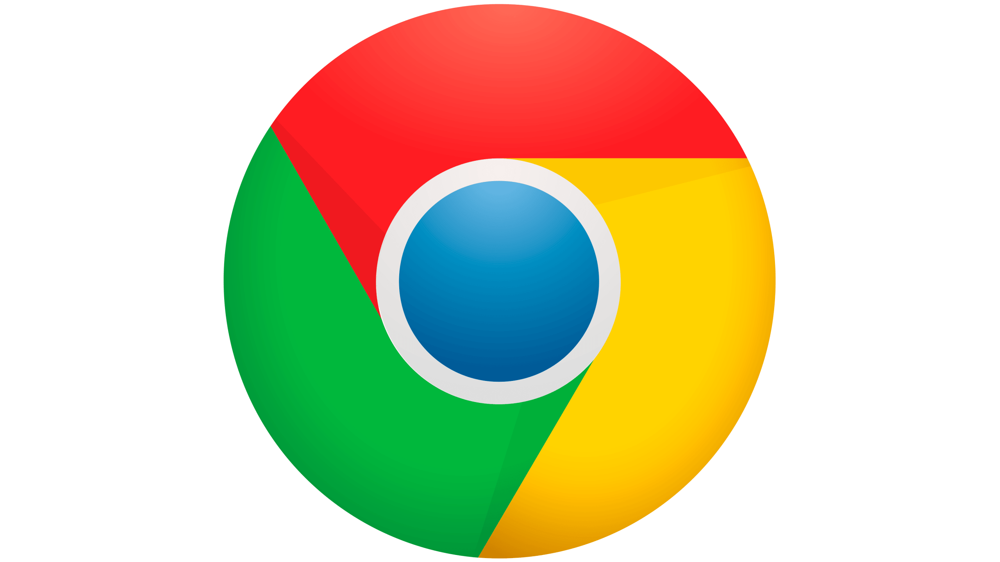
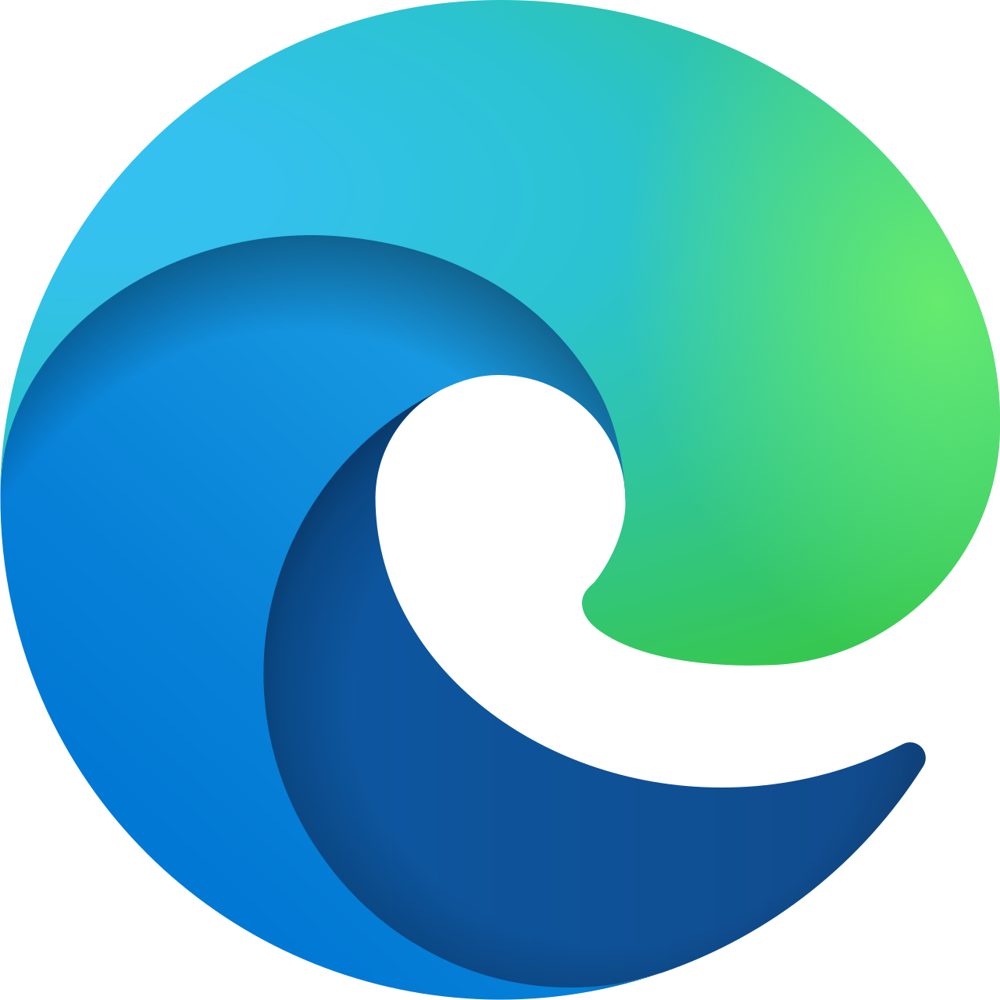
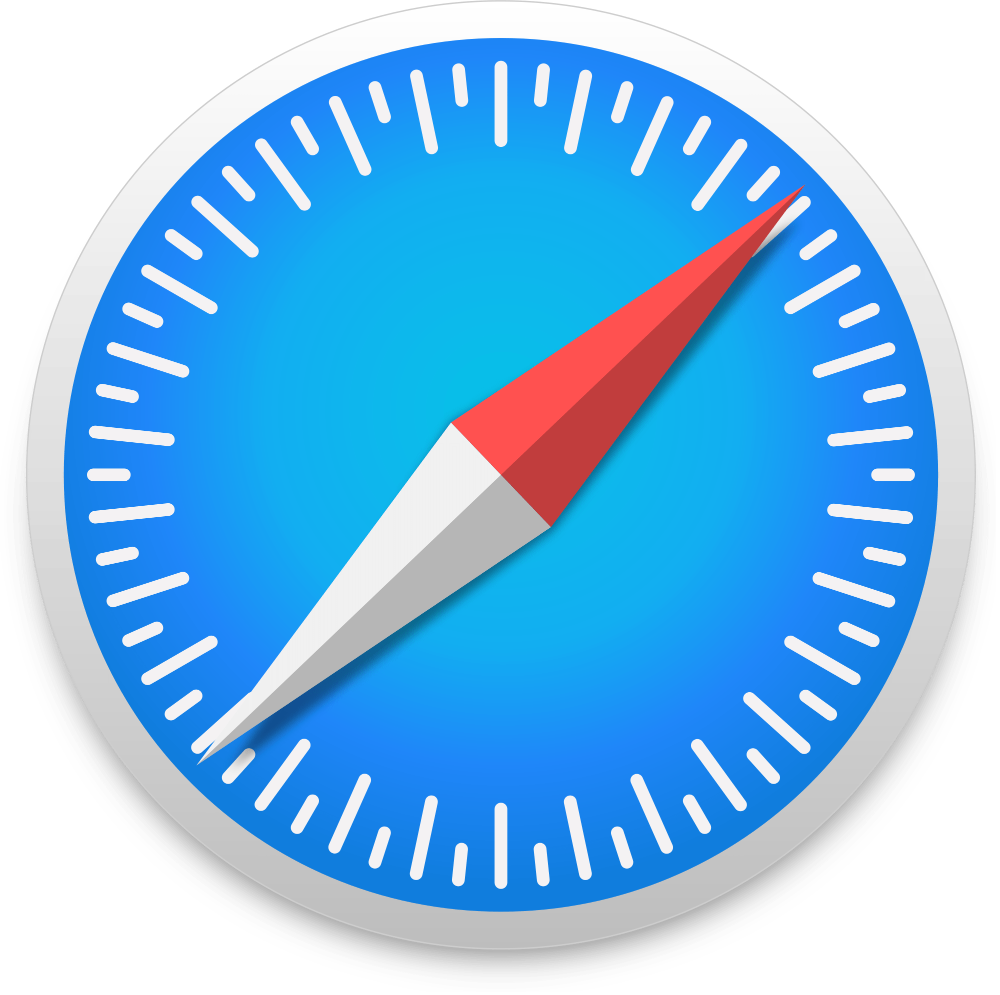
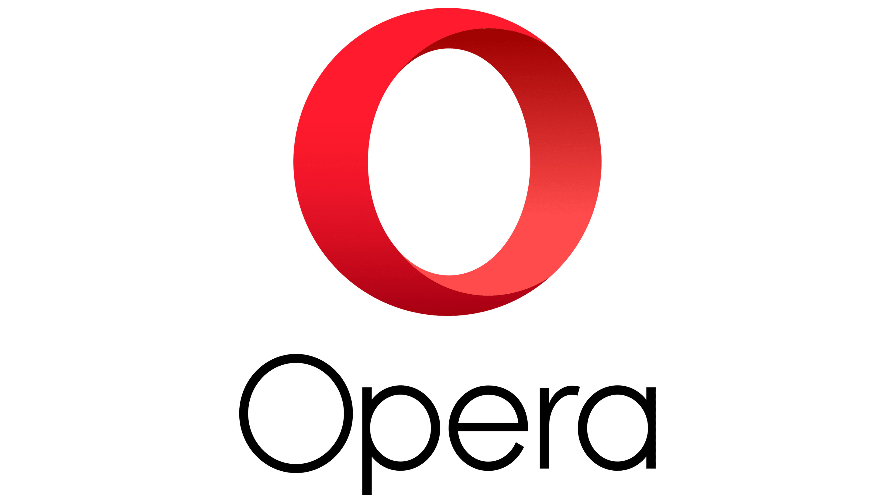

Popular Browsers
A handful of browsers make up almost the entire market. Here is who leads on desktop and mobile as of September 2026.
| Browser | Owner | Engine | Desktop share | Mobile share | Highlights |
|---|---|---|---|---|---|
|
 Google Chrome |
Chromium | 65.72% | 66.01% | The most popular browser on both desktop and mobile. Known for its speed, performance and clean design. | |
|
 Microsoft Edge |
Microsoft | Chromium | 14.55% | – | The default browser on Windows. Rebuilt on Chromium and released to the public in 2020. |
|
 Safari |
Apple | WebKit | 7.68% | 26.33% | Built into every Mac, iPhone and iPad. One of the few browsers not based on Chromium. |
| Firefox | Mozilla Corporation | Gecko | 6.01% | 0.76% | Free and open source. One of the oldest browsers still around, with a peak share of 32.21% in 2009. |
|
 Opera |
Opera | Chromium | 2.06% | 1.21% | One of many browsers built on Chromium, along with Edge and Brave. |
– Edge is not in the top six mobile browsers. Samsung Internet (3.58%) and UC Browser (0.75%) round out the top six mobile browsers.
Browser Profiles
Google Chrome
- The most popular browser on both desktop and mobile.
- When it launched in 2008, it competed with established browsers like Internet Explorer and Firefox. Users switched because it was faster, used fewer resources and had a cleaner interface.
- Built on Chromium, an open-source project that Edge, Brave, Opera and many app frameworks also use, so much of the web is built by and for Chromium.
- Chrome came up in the U.S. antitrust case over Google's search monopoly. The government asked for it to be sold, but in 2025 the judge decided Google could keep it.
Safari
- The second largest mobile browser and the third largest on desktop.
- Built into Apple's operating systems on the Mac, iPhone and iPad.
- Most of its users are Apple users who stay in the Apple ecosystem because Apple's devices work well together.
- Uses the WebKit engine, making it one of the few browsers not based on Chromium.
Microsoft Edge
- The second largest desktop browser, with little mobile share.
- First released with Windows 10 in 2015, and on Android and iOS in 2017.
- Rebuilt on Chromium, with testing in 2019 and a public release in 2020.
- The default browser on Windows, and also available on macOS, Linux, iOS and Android.
Firefox
- A free, open-source browser, and one of the few not based on Chromium.
- Released in 2004, growing out of Netscape's code and the Mozilla project.
- Its share peaked around 2009 at 32.21% but has fallen steadily since Chrome's rise.
- Much of Mozilla's revenue comes from Google, which pays to be Firefox's default search engine.
- Its Gecko engine is the third major engine after Chromium and WebKit, and keeping it alive helps prevent a browser duopoly.